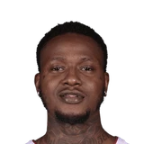

“But there were times this year when I wanted to say to him, 'Listen, you don't have reason to stress. You're Kyrie Irving. I'm the one that has reasons to stress.'”


What Terry Rozier has said about Kyrie Irving
Every quote from Terry Rozier about Kyrie Irving in the archive, newest first. Each one links to its original source.
Quotes per season
2017-182018-19
2018-19
1 quote2017-18
1 quoteCeltics: Terry Rozier on Kyrie Irving:
“He’s a guy that wants to see other guys succeed, and that’s what makes him a leader.”
Related
- Everyone on Kyrie Irving193 quotes
- Terry Rozier on everyone20 quotes
 Kevin Durant on Kyrie Irving17 quotes
Kevin Durant on Kyrie Irving17 quotes- Brad Stevens on Kyrie Irving13 quotes
 LeBron James on Kyrie Irving13 quotes
LeBron James on Kyrie Irving13 quotes Steve Nash on Kyrie Irving13 quotes
Steve Nash on Kyrie Irving13 quotes Jason Kidd on Kyrie Irving8 quotes
Jason Kidd on Kyrie Irving8 quotes Sean Marks on Kyrie Irving7 quotes
Sean Marks on Kyrie Irving7 quotes- Tyronn Lue on Kyrie Irving7 quotes
 Jayson Tatum on Kyrie Irving5 quotes
Jayson Tatum on Kyrie Irving5 quotes